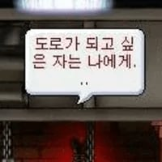

친구들하고 술먹고 그 다음날 몬가몬가 벌어짐
댓글
친구인줄 알았는데 아니었슴
뭐야 서있는거였네
그니까 마지막에 친구아니었던거 밝혀지는거까지ㅋㅋㅋㅋㅋㅋ
박쥐가 아침을 깨워주네 ㅋㅋㅋㅋ

행오버 시리즈 꿀잼
영화 행오버 실사판이네ㅋㅋ
누가 쥬만지 가져왔냐
운전기사, 박쥐, 원숭이, 이상한 작은 남자...
뭐야 이게 ㅋㅋㅋㅋ
저정도면 술이 아니라 약 한거아니냐ㅋㅋㅋ
얼마나 퍼마신거야ㅋㅋㅋ
다음 날 아침에 다들 기억 조각 맞추는 중ㅋㅋ
ㅋㅋㅋㅋ이거 볼 때마다 아무렇지 않게 옆에 서있는 미니미 남자 ㅈㄴ 웃김